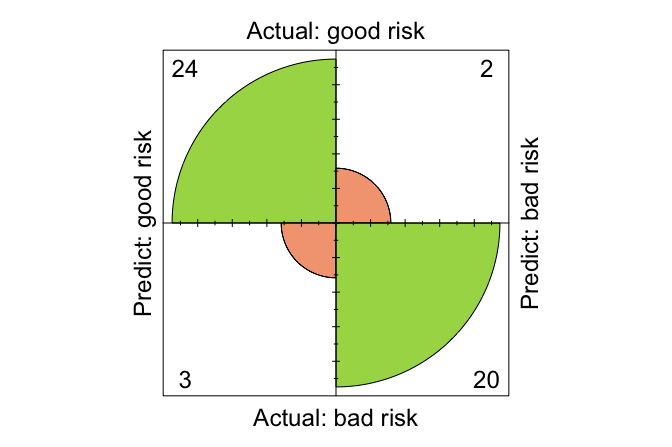

9 Naive Bayes Classifier
How can we make fast, reasonably accurate predictions, using minimal data and computation? Imagine a bank deciding, in real time, whether to approve a loan based on a customer’s income, age, and mortgage status. Behind the scenes, such decisions must be made quickly, reliably, and at scale. The Naive Bayes classifier offers a remarkably simple yet surprisingly effective solution, relying on probability theory to make informed predictions in milliseconds.
In Chapter 7, we introduced k-Nearest Neighbors (kNN), a model that classifies based on similarity in feature space. In Chapter 8, we learned how to assess model performance using confusion matrices, sensitivity, specificity, ROC curves, and other evaluation metrics. Now, we turn to a fundamentally different approach: Naive Bayes, a probabilistic classifier grounded in Bayesian theory. Unlike kNN, which has no formal training phase, Naive Bayes builds a model from the data, estimating how likely each class is, given the features. It produces not just decisions but class probabilities, which integrate seamlessly with the evaluation tools we introduced earlier. This chapter gives us the chance to apply those tools while exploring a new perspective on classification.
At its core, Naive Bayes is built on Bayes’ theorem and makes a bold simplifying assumption: that all features are conditionally independent given the class label. This assumption is rarely true in practice, yet the model often works surprisingly well. Why? Because it enables fast training, efficient probability estimation, and interpretable outputs. The algorithm is especially well suited to high-dimensional data, such as text classification, where thousands of features are common. It is also ideal for real-time tasks like spam filtering or financial risk scoring, where speed and simplicity matter.
But every model has trade-offs. Naive Bayes assumes feature independence, an assumption often violated when features are strongly correlated. It also does not naturally handle continuous features unless a specific distribution (often Gaussian) is assumed, which may misrepresent the data. And while it performs well in many scenarios, more flexible models, like decision trees or ensemble methods, can outperform it on datasets with complex feature interactions.
Despite these limitations, Naive Bayes remains a favorite in many real-world applications. In domains such as sentiment analysis, email filtering, and document classification, its assumptions hold well enough, and its simplicity becomes an asset. It is fast, easy to implement, and interpretable, qualities that make it a strong first-choice model and a valuable baseline in the early stages of model development.
The model’s power comes from its foundation in Bayesian probability, specifically Bayes’ Theorem, introduced by the 18th-century statistician Thomas Bayes (Bayes 1958). This theorem offers a principled way to update beliefs in light of new data, combining prior knowledge with observed evidence. It remains one of the most influential ideas in both statistics and machine learning.
What This Chapter Covers
This chapter explores how the Naive Bayes classifier leverages probability to make fast, interpretable predictions, even in high-dimensional and sparse settings. You will deepen your conceptual understanding of Bayesian reasoning while gaining hands-on experience implementing Naive Bayes models in R.
In particular, you will:
Understand the mathematical foundation of Naive Bayes, including Bayes’ theorem and its role in classification.
Work through step-by-step examples to see how the model estimates class probabilities from training data.
Compare the main variants of Naive Bayes (Gaussian, Multinomial, and Bernoulli) and identify when each is appropriate.
Analyze key assumptions, strengths, and limitations of the model in practical scenarios.
Implement and evaluate a Naive Bayes model using the risk dataset from the liver package.
By the end of this chapter, you will be able to explain how Naive Bayes works, choose the right variant for a given task, and apply it effectively in R. To begin, let us revisit the core principle that drives this classifier: Bayes’ theorem.
9.1 Bayes’ Theorem and Probabilistic Foundations
How should we update our beliefs when new evidence becomes available? Whether assessing financial risk, diagnosing medical conditions, or detecting spam, many real-world decisions require reasoning under uncertainty. Bayes’ Theorem provides a formal, principled framework for refining probability estimates as new information emerges, making it a cornerstone of probabilistic learning and modern machine learning.
This framework underlies what is known as Bayesian inference: the process of starting with prior expectations based on historical data and updating them using new evidence to obtain a more accurate posterior belief. For example, when evaluating whether a loan applicant poses a financial risk, an institution might begin with general expectations derived from population statistics. As additional details, such as mortgage status or outstanding debts, are observed, Bayes’ Theorem enables a systematic update of the initial risk assessment.
This idea traces back to Thomas Bayes, an 18th-century minister and self-taught mathematician. His pioneering work introduced a dynamic interpretation of probability, not merely as the frequency of outcomes, but as a belief that can evolve with new data. Readers interested in the broader implications of Bayesian reasoning may enjoy the book “Everything Is Predictable: How Bayesian Statistics Explain Our World”, which explores how this perspective informs real-life decisions.
Even earlier, the conceptual roots of probability theory developed from attempts to reason about chance in gambling, trade, and risk. In the 17th century, mathematicians such as Gerolamo Cardano, Blaise Pascal, and Pierre de Fermat laid the groundwork for formal probability theory. Cardano, for example, observed that some dice outcomes, such as sums of 9 versus 10, have unequal likelihoods due to differing numbers of permutations. These early insights into randomness and structure laid the intellectual foundation for modern approaches to modeling uncertainty, including the Naive Bayes classifier.
The Essence of Bayes’ Theorem
Bayes’ Theorem offers a systematic method for refining probabilistic beliefs as new evidence is observed, forming the theoretical foundation of Bayesian inference. It addresses a central question in probabilistic reasoning: Given what is already known, how should our belief in a hypothesis change when new data are observed?
The theorem is mathematically expressed as:
\[\begin{equation} \label{eq-bayes-theorem} P(A|B) = \frac{P(A \cap B)}{P(B)} \end{equation}\]Where:
\(P(A|B)\) is the posterior probability, the probability of event \(A\) (the hypothesis) given that event \(B\) (the evidence) has occurred.
\(P(A \cap B)\) is the joint probability that both events \(A\) and \(B\) occur.
\(P(B)\) is the marginal probability or evidence, quantifying the total probability of observing event \(B\) across all possible outcomes.
To better understand these components, Figure 9.1 offers a visual interpretation using a Venn diagram. The overlapping region of the two circles illustrates the joint probability \(P(A \cap B)\), while the entire area of circle \(B\) represents \(P(B)\).
The expression for Bayes’ Theorem can also be derived by applying the definition of conditional probability. Specifically, \(P(A \cap B)\) can be written as \(P(A) \times P(B|A)\), leading to an alternative form:
\[\begin{equation} \label{eq-bayes-theorem-2} P(A|B) = \frac{P(A \cap B)}{P(B)} = P(A) \times \frac{P(B|A)}{P(B)} \end{equation}\]These equivalent expressions result from two ways of expressing the joint probability \(P(A \cap B)\). This formulation highlights how a prior belief \(P(A)\) is updated using the likelihood \(P(B|A)\) and normalized by the marginal probability \(P(B)\).
Bayes’ Theorem thus provides a principled way to refine beliefs by incorporating new evidence. This principle underpins many probabilistic learning techniques, including the Naive Bayes classifier introduced in this chapter.
Let us now apply Bayes’ Theorem to a practical example: estimating the probability that a customer has a good risk profile (\(A\)) given that they have a mortgage (\(B\)), using the risk dataset from the liver package.
We begin by loading the dataset and inspecting the relevant data:
library(liver)
data(risk)
xtabs(~ risk + mortgage, data = risk)
mortgage
risk yes no
good risk 81 42
bad risk 94 29To improve readability, we add row and column totals to the contingency table:
addmargins(xtabs(~ risk + mortgage, data = risk))
mortgage
risk yes no Sum
good risk 81 42 123
bad risk 94 29 123
Sum 175 71 246Now, we define the relevant events: \(A\) is the event that a customer has a good risk profile, and \(B\) is the event that the customer has a mortgage (mortgage = yes). The prior probability of a customer having good risk is:
\[ P(A) = \frac{\text{Total Good Risk Cases}}{\text{Total Cases}} = \frac{123}{246} = 0.5 \]
Using Bayes’ Theorem, we compute the probability of a customer being classified as good risk given that they have a mortgage:
\[\begin{equation} \label{eq1} \begin{split} P(\text{Good Risk} | \text{Mortgage = Yes}) & = \frac{P(\text{Good Risk} \cap \text{Mortgage = Yes})}{P(\text{Mortgage = Yes})} \\ & = \frac{\text{Good Risk with Mortgage Cases}}{\text{Total Mortgage Cases}} \\ & = \frac{81}{175} \\ & = 0.463 \end{split} \end{equation}\]This result indicates that among customers with mortgages, the observed proportion of those with a good risk profile is lower than in the general population. Such insights help financial institutions refine credit risk models by incorporating new evidence systematically.
How Does Bayes’ Theorem Work?
Imagine you are deciding whether to approve a loan application. You begin with a general expectation, perhaps most applicants with steady income and low debt are low risk. But what happens when you learn that the applicant has missed several past payments? Your belief shifts. This type of evidence-based reasoning is precisely what Bayes’ Theorem formalizes.
Bayes’ Theorem provides a structured method to refine our understanding of uncertainty as new information becomes available. In everyday decisions, whether assessing financial risk or evaluating the results of a medical test, we often begin with an initial belief and revise it in light of new evidence.
Bayesian reasoning plays a central role in many practical applications. In financial risk assessment, banks typically begin with prior expectations about borrower profiles, and then revise the risk estimate after considering additional information such as income, credit history, or mortgage status. In medical diagnostics, physicians assess the baseline probability of a condition and then update that estimate based on test results, incorporating both prevalence and diagnostic accuracy. In spam detection, email filters estimate the probability that a message is spam using features such as keywords, sender information, and formatting, and continually refine those estimates as new messages are processed.
Can you think of a situation where you made a decision based on initial expectations, but changed your mind after receiving new information? That shift in belief is the intuition behind Bayesian updating. Bayes’ Theorem turns this intuition into a formal rule. It offers a principled mechanism for learning from data, one that underpins many modern tools for prediction and classification.
From Bayes’ Theorem to Naive Bayes
Bayes’ Theorem provides a mathematical foundation for updating probabilities as new evidence emerges. However, directly applying Bayes’ Theorem to problems involving many features becomes impractical, as it requires estimating a large number of joint probabilities from data, many of which may be sparse or unavailable.
The Naive Bayes classifier addresses this challenge by introducing a simplifying assumption: it treats all features as conditionally independent given the class label. While this assumption rarely holds exactly in real-world datasets, it dramatically simplifies the required probability calculations.
Despite its simplicity, Naive Bayes often delivers competitive results. For example, in financial risk prediction, a bank may evaluate a customer’s creditworthiness using multiple variables such as income, loan history, and mortgage status. Although these variables are often correlated, the independence assumption enables the classifier to estimate probabilities efficiently by breaking the joint distribution into simpler, individual terms.
This efficiency is particularly advantageous in domains like text classification, spam detection, and sentiment analysis, where the number of features can be very large and independence is a reasonable approximation.
Why does such a seemingly unrealistic assumption often work so well in practice? As we will see, this simplicity allows Naive Bayes to serve as a fast, interpretable, and surprisingly effective classifier, even in complex real-world settings.
9.2 Why Is It Called “Naive”?
When assessing a borrower’s financial risk using features such as income, mortgage status, and number of loans, it is reasonable to expect dependencies among them. For example, individuals with higher income may be more likely to have multiple loans or stable mortgage histories. However, Naive Bayes assumes that all features are conditionally independent given the class label (e.g., “good risk” or “bad risk”).
This simplifying assumption is what gives the algorithm its name. While features in real-world data are often correlated, such as income and age, assuming independence significantly simplifies probability calculations, making the method both efficient and scalable.
To illustrate this, consider the risk dataset from the liver package:
str(risk)
'data.frame': 246 obs. of 6 variables:
$ age : int 34 37 29 33 39 28 28 25 41 26 ...
$ marital : Factor w/ 3 levels "single","married",..: 3 3 3 3 3 3 3 3 3 3 ...
$ income : num 28061 28009 27615 27287 26954 ...
$ mortgage: Factor w/ 2 levels "yes","no": 1 2 2 1 1 2 2 2 2 2 ...
$ nr.loans: int 3 2 2 2 2 2 3 2 2 2 ...
$ risk : Factor w/ 2 levels "good risk","bad risk": 2 2 2 2 2 2 2 2 2 2 ...This dataset includes financial indicators such as age, income, marital status, mortgage, and number of loans. Naive Bayes assumes that, given a person’s risk classification, these features do not influence one another. Mathematically, the probability of a customer being in the good risk category given their attributes is expressed as:
\[ P(Y = y_1 | X_1, X_2, \dots, X_5) = \frac{P(Y = y_1) \times P(X_1, X_2, \dots, X_5 | Y = y_1)}{P(X_1, X_2, \dots, X_5)} \]
Mathematically, computing the full joint likelihood of all features given a class label is challenging. Directly computing \(P(X_1, X_2, \dots, X_5 | Y = y_1)\) is computationally expensive, especially as the number of features grows. In datasets with hundreds or thousands of features, storing and calculating joint probabilities for all possible feature combinations becomes impractical.
The naive assumption of conditional independence simplifies this problem by expressing the joint probability as the product of individual probabilities:
\[ P(X_1, X_2, \dots, X_5 | Y = y_1) = P(X_1 | Y = y_1) \times P(X_2 | Y = y_1) \times P(X_5 | Y = y_1) \]
This transformation eliminates the need to compute complex joint probabilities, making the algorithm scalable even for high-dimensional data. Instead of handling an exponential number of feature combinations, Naive Bayes only requires computing simple conditional probabilities for each feature given the class label.
In practice, the independence assumption is rarely true, as features often exhibit some degree of correlation. Nevertheless, Naive Bayes remains widely used in domains where feature dependencies are sufficiently weak to preserve classification accuracy, where interpretability and computational efficiency are prioritized over capturing complex relationships, and where minor violations of the independence assumption do not substantially degrade predictive performance.
For example, in credit risk prediction, while income and mortgage status are likely correlated, treating them as independent still allows Naive Bayes to classify borrowers effectively. Similarly, in spam detection or text classification, where features (such as word occurrences) are often close to independent, the algorithm delivers fast and accurate predictions.
By reducing complex joint probability estimation to simpler conditional calculations, Naive Bayes offers a scalable solution. In the next section, we address a key practical issue: how to handle zero-probability problems when certain feature values are absent in the training data.
9.3 The Laplace Smoothing Technique
One challenge in Naive Bayes classification is handling feature values that appear in the test data but are missing from the training data for a given class. For example, suppose no borrowers labeled as “bad risk” are married in the training data. If a married borrower later appears in the test set, Naive Bayes would assign a probability of zero to \(P(\text{bad risk} | \text{married})\). Because the algorithm multiplies probabilities when making predictions, this single zero would eliminate the bad risk class from consideration, leading to a biased or incorrect prediction.
This issue arises because Naive Bayes estimates conditional probabilities directly from frequency counts in the training set. If a category is absent for a class, its conditional probability becomes zero. To address this, Laplace smoothing (or add-one smoothing) is used. Named after Pierre-Simon Laplace, the technique assigns a small non-zero probability to every possible feature-class combination, even if some combinations do not appear in the data.
To illustrate, consider the marital variable in the risk dataset. Suppose no customers labeled as bad risk are married. We can simulate this scenario:
risk
marital good risk bad risk
single 21 11
married 51 0
other 8 10Without smoothing, the conditional probability becomes:
\[ P(\text{bad risk} | \text{married}) = \frac{\text{count}(\text{bad risk} \cap \text{married})}{\text{count}(\text{married})} = \frac{0}{\text{count}(\text{married})} = 0 \]
This would cause every married borrower to be classified as good risk, regardless of other features.
Laplace smoothing resolves this by adjusting the count of each category. A small constant \(k\) (typically \(k = 1\)) is added to each count, yielding:
\[ P(\text{bad risk} | \text{married}) = \frac{\text{count}(\text{bad risk} \cap \text{married}) + k}{\text{count}(\text{bad risk}) + k \times \text{number of marital categories}} \]
This adjustment ensures that every possible feature-category pair has a non-zero probability, even if unobserved in the training set.
In R, you can apply Laplace smoothing using the laplace argument in the naivebayes package. By default, no smoothing is applied (laplace = 0). To apply smoothing, simply set laplace = 1:
library(naivebayes)
formula_nb = risk ~ age + income + marital + mortgage + nr.loans
model <- naive_bayes(formula = formula_nb, data = risk, laplace = 1)This adjustment improves model robustness, especially when working with limited or imbalanced data. Curious to see how the naivebayes package performs in practice? In the case study later in this chapter, we will walk through how to train and evaluate a Naive Bayes model using the risk dataset, complete with R code, predicted probabilities, and performance metrics.
Laplace smoothing is a simple yet effective fix for the zero-probability problem in Naive Bayes. While \(k = 1\) is a common default, the value can be tuned based on domain knowledge. By ensuring that all probabilities remain well-defined, Laplace smoothing makes Naive Bayes more reliable for real-world prediction tasks.
9.4 Types of Naive Bayes Classifiers
What if your dataset includes text, binary flags, and numeric values? Can a single Naive Bayes model accommodate them all? Not exactly. Different types of features require different probabilistic assumptions, this is where distinct variants of the Naive Bayes classifier come into play. The choice of variant depends on the structure and distribution of the predictors in your data.
Each of the three most common types of Naive Bayes classifiers is suited to a specific kind of feature:
Multinomial Naive Bayes is designed for categorical or count-based features, such as word frequencies in text data. It models the probability of counts using a multinomial distribution. In the
riskdataset, themaritalvariable, with levels such assingle,married, andother, is an example where this variant is appropriate.Bernoulli Naive Bayes is intended for binary features that capture the presence or absence of a characteristic. This approach is common in spam filtering, where features often indicate whether a particular word is present. In the
riskdataset, the binarymortgagevariable (yesorno) fits this model.Gaussian Naive Bayes is used for continuous features that are assumed to follow a normal distribution. It models feature likelihoods using Gaussian densities and is well suited for variables like
ageandincomein theriskdataset.
Selecting the appropriate variant based on your feature types ensures that the underlying probability assumptions remain valid and that the model produces reliable predictions.
The names Bernoulli and Gaussian refer to foundational distributions introduced by two prominent mathematicians: Jacob Bernoulli, known for early work in probability theory, and Carl Friedrich Gauss, associated with the normal distribution. Their contributions form the statistical backbone of different Naive Bayes variants.
In the next section, we apply Naive Bayes to the risk dataset and explore how these variants operate in practice.
9.5 Case Study: Predicting Financial Risk with Naive Bayes
How can a bank predict in advance whether an applicant is likely to repay a loan, or default, before making a lending decision? This is a daily challenge for financial institutions, where each loan approval carries both potential profit and risk. Making accurate predictions about creditworthiness helps banks protect their assets, comply with regulatory standards, and promote responsible lending practices.
In this case study, we apply the complete Data Science Workflow introduced in Chapter 2 (Figure 2.3), following each step, from understanding the problem and preparing the data to training, evaluating, and interpreting the model. Using the risk dataset from the liver package in R, we build a Naive Bayes classifier to categorize customers as either good risk or bad risk. By walking through the workflow step-by-step, this example demonstrates how probabilistic classification can guide credit decisions and help institutions manage financial risk in a structured, data-driven manner.
Problem Understanding
How can financial institutions anticipate which applicants are likely to repay their loans and which may default before extending credit? This challenge lies at the heart of modern lending practices. Effective financial risk assessment requires balancing profitability with caution by using demographic and financial indicators to estimate the likelihood of default.
This case study builds on earlier chapters: Chapter Chapter 7 introduced classification with instance-based methods, and Chapter Chapter 8 covered how to assess model performance. We now extend these foundations by applying a probabilistic classification technique, Naive Bayes, to a real-world dataset.
Key business questions guiding this analysis include:
Which financial and demographic features influence a customer’s risk profile?
How can we predict a customer’s risk category before making a loan decision?
In what ways can such predictions support more effective lending strategies?
By analyzing the risk dataset, we aim to develop a model that classifies customers as good risk or bad risk based on their likelihood of default. The results can inform data-driven credit scoring, guide responsible lending practices, and reduce non-performing loans.
Data Understanding
Before training a classification model, we begin by exploring the dataset to assess the structure of the variables, identify key distributions, and check for any anomalies that might affect modeling. As introduced earlier in Section 9.2, the risk dataset from the liver package contains financial and demographic attributes used to assess whether a customer is a good risk or bad risk. It includes 246 observations across 6 variables.
The dataset consists of 5 predictors and a binary target variable, risk, which distinguishes between customers who are more or less likely to default. The key variables are:
-
age: Customer’s age in years. -
marital: Marital status (single,married,other). -
income: Annual income. -
mortgage: Indicates whether the customer has a mortgage (yes,no). -
nr_loans: Number of loans held by the customer. -
risk: The target variable (good risk,bad risk).
For additional details about the dataset, refer to its documentation.
To obtain an overview of the variable distributions and check for missing values or outliers, we examine the dataset’s summary statistics:
summary(risk)
age marital income mortgage nr.loans risk
Min. :17.00 single :111 Min. :15301 yes:175 Min. :0.000 good risk:123
1st Qu.:32.00 married: 78 1st Qu.:26882 no : 71 1st Qu.:1.000 bad risk :123
Median :41.00 other : 57 Median :37662 Median :1.000
Mean :40.64 Mean :38790 Mean :1.309
3rd Qu.:50.00 3rd Qu.:49398 3rd Qu.:2.000
Max. :66.00 Max. :78399 Max. :3.000As the summary indicates a clean and well-structured dataset with no apparent anomalies, we can proceed to data preparation before training the Naive Bayes classifier.
Data Setup for Modeling
Before training the Naive Bayes classifier, we begin by splitting the dataset into training and testing sets. This step allows us to evaluate how well the model generalizes to unseen data. We use an 80/20 split, allocating 80% of the data for training and 20% for testing. To maintain consistency with previous chapters, we apply the partition() function from the liver package:
Setting set.seed(5) ensures reproducibility so that the same partitioning is achieved each time the code is run. The train_set will be used to train the Naive Bayes classifier, while the test_set will serve as unseen data to evaluate the model’s predictions. The test_labels vector contains the true class labels for the test set, which we will compare against the model’s outputs.
As discussed in Section 6.5, it is important to check whether the training and test sets are representative of the original dataset. This can be done by comparing the distribution of the target variable or key predictors. Here, we illustrate the process by validating the marital variable across the two sets. As an exercise, you are encouraged to validate the partition based on the target variable risk to confirm that both classes, good risk and bad risk, are similarly distributed.
To check for representativeness, we use a chi-squared test to compare the distribution of marital statuses (single, married, other) in the training and test sets:
chisq.test(x = table(train_set$marital), y = table(test_set$marital))
Pearson's Chi-squared test
data: table(train_set$marital) and table(test_set$marital)
X-squared = 6, df = 4, p-value = 0.1991This test evaluates whether the proportions of marital categories differ significantly between the two sets. The hypotheses are:
\[ \begin{cases} H_0: \text{The proportions of marital categories are the same in both sets.} \\ H_a: \text{At least one of the proportions is different.} \end{cases} \]
Since the p-value exceeds \(\alpha = 0.05\), we fail to reject \(H_0\). This suggests that the marital status distribution is statistically similar between the training and test sets, indicating that the partition preserves the key structure of the dataset.
Unlike distance-based algorithms such as k-nearest neighbors, the Naive Bayes classifier does not rely on geometric distance calculations. Therefore, there is no need to scale numeric variables such as age or income, and no need to convert categorical variables like marital into dummy variables. The algorithm models probability distributions directly, making it robust to different variable types without requiring transformation. This illustrates how preprocessing steps must be tailored to the modeling technique in use.
In contrast, when applying kNN to this dataset (see Chapter 7), it would be necessary to scale numerical variables and encode categorical variables. These considerations are explored further in this chapter’s exercises.
Applying the Naive Bayes Classifier
With the dataset partitioned and validated, we now proceed to train and evaluate the Naive Bayes classifier. This model is particularly well suited to problems like credit risk assessment because it is fast, interpretable, and effective even when variables are a mix of numerical and categorical types.
Several R packages provide implementations of Naive Bayes, with two commonly used options being naivebayes and e1071. In this case study, we use the naivebayes package, which offers a fast and flexible implementation that supports both categorical and continuous features.
The core function, naive_bayes(), estimates the required probability distributions during training and stores them in a model object. Based on the types of the predictors, the algorithm makes the following assumptions:
Categorical distributions for nominal variables such as
maritalandmortgage;Bernoulli distributions for binary variables, which are a special case of categorical features;
Poisson distributions for count variables (optionally enabled);
Gaussian distributions for continuous features such as
ageandincome;Kernel density estimation for continuous features when no parametric form is assumed.
Unlike the k-NN algorithm introduced in Chapter Chapter 7, which does not include an explicit training phase, Naive Bayes follows a two-step procedure:
Training phase: The model estimates class-conditional probability distributions from the training data.
Prediction phase: The trained model applies Bayes’ theorem to compute posterior probabilities for new observations.
To train the model, we specify a formula where risk is the target variable and all other columns are treated as predictors:
formula = risk ~ age + income + mortgage + nr.loans + maritalWe then fit the model using the naive_bayes() function:
library(naivebayes)
naive_bayes = naive_bayes(formula, data = train_set)
naive_bayes
===================================================== Naive Bayes ======================================================
Call:
naive_bayes.formula(formula = formula, data = train_set)
------------------------------------------------------------------------------------------------------------------------
Laplace smoothing: 0
------------------------------------------------------------------------------------------------------------------------
A priori probabilities:
good risk bad risk
0.4923858 0.5076142
------------------------------------------------------------------------------------------------------------------------
Tables:
------------------------------------------------------------------------------------------------------------------------
:: age (Gaussian)
------------------------------------------------------------------------------------------------------------------------
age good risk bad risk
mean 46.453608 35.470000
sd 8.563513 9.542520
------------------------------------------------------------------------------------------------------------------------
:: income (Gaussian)
------------------------------------------------------------------------------------------------------------------------
income good risk bad risk
mean 48888.987 27309.560
sd 9986.962 7534.639
------------------------------------------------------------------------------------------------------------------------
:: mortgage (Bernoulli)
------------------------------------------------------------------------------------------------------------------------
mortgage good risk bad risk
yes 0.6804124 0.7400000
no 0.3195876 0.2600000
------------------------------------------------------------------------------------------------------------------------
:: nr.loans (Gaussian)
------------------------------------------------------------------------------------------------------------------------
nr.loans good risk bad risk
mean 1.0309278 1.6600000
sd 0.7282057 0.7550503
------------------------------------------------------------------------------------------------------------------------
:: marital (Categorical)
------------------------------------------------------------------------------------------------------------------------
marital good risk bad risk
single 0.38144330 0.49000000
married 0.52577320 0.11000000
other 0.09278351 0.40000000
------------------------------------------------------------------------------------------------------------------------This function automatically identifies the feature types and estimates appropriate probability distributions for each class. For instance:
Categorical features (e.g.,
marital,mortgage) are modeled using class-conditional probabilities.Numerical features (e.g.,
age,income,nr.loans) are modeled using Gaussian distributions by default.
To inspect the learned parameters, we can use:
summary(naive_bayes)
===================================================== Naive Bayes ======================================================
- Call: naive_bayes.formula(formula = formula, data = train_set)
- Laplace: 0
- Classes: 2
- Samples: 197
- Features: 5
- Conditional distributions:
- Bernoulli: 1
- Categorical: 1
- Gaussian: 3
- Prior probabilities:
- good risk: 0.4924
- bad risk: 0.5076
------------------------------------------------------------------------------------------------------------------------This summary shows the estimated means and standard deviations for numerical predictors and the conditional probabilities for categorical ones. These form the foundation of the model’s predictions.
Now that the nr.loans variable is a count with values such as 0, 1, and 3. While the default setting uses a Gaussian distribution, it may be worth experimenting with the usepoisson = TRUE option to see whether a Poisson distribution offers a better fit. As an exercise, you are encouraged to compare model performance with and without this option.
Prediction and Model Evaluation
With the Naive Bayes classifier trained, we now evaluate its performance by applying it to the test set, data that was not used during training. The objective is to compare the model’s predicted class probabilities against the actual outcomes stored in test_labels.
To generate predicted probabilities for each class, we use the predict() function from the naivebayes package, setting type = "prob" to return posterior probabilities instead of hard class labels:
prob_naive_bayes = predict(naive_bayes, test_set, type = "prob")To explore the output, we display the first 6 rows and round the values to three decimal places:
round(head(prob_naive_bayes, n = 6), 3)
good risk bad risk
[1,] 0.001 0.999
[2,] 0.013 0.987
[3,] 0.000 1.000
[4,] 0.184 0.816
[5,] 0.614 0.386
[6,] 0.193 0.807The resulting matrix contains two columns: the first shows the predicted probability that a customer belongs to the “good risk” class, while the second shows the probability of being in the “bad risk” class. For example, if a customer receives a high probability for “bad risk,” it suggests that the model considers them more likely to default.
Rather than relying on a fixed decision threshold (such as 0.5), the model’s probabilities can be mapped to class labels using a threshold selected according to specific business needs. In the next subsection, we convert these probabilities into class predictions and evaluate performance using a confusion matrix and additional metrics.
Confusion Matrix
To assess the classification performance of the Naive Bayes model, we compute a confusion matrix using the conf.mat() and conf.mat.plot() functions from the liver package:
# Extract probability of "good risk"
prob_naive_bayes = prob_naive_bayes[, 1]
conf.mat(prob_naive_bayes, test_labels, cutoff = 0.5, reference = "good risk")
Actual
Predict good risk bad risk
good risk 24 3
bad risk 2 20
conf.mat.plot(prob_naive_bayes, test_labels, cutoff = 0.5, reference = "good risk")
We apply a threshold of 0.5, classifying an observation as “good risk” if its predicted probability for that class exceeds 50%. The reference class is “good risk”, meaning that metrics such as sensitivity and precision are computed relative to this category.
The resulting confusion matrix summarizes the model’s predictions compared to the actual outcomes, highlighting both correct classifications and misclassifications. For example, the matrix may indicate that 24 customers were correctly classified as “good risk” and 20 as “bad risk”, while 3 “bad risk” cases were misclassified as “good risk” and 2 “good risk” cases were misclassified as “bad risk”.
Want to explore the effect of changing the classification threshold? Try setting the cutoff to values such as 0.4 or 0.6 to examine how sensitivity, specificity, and overall accuracy shift under different decision criteria.
ROC Curve and AUC
To complement the confusion matrix, we use the Receiver Operating Characteristic (ROC) curve and the Area Under the Curve (AUC) to evaluate the classifier’s performance across all possible classification thresholds. While the confusion matrix reflects accuracy at a fixed cutoff (e.g., 0.5), ROC analysis provides a more flexible, threshold-agnostic view of model performance.

The ROC curve plots the true positive rate (sensitivity) against the false positive rate (1 - specificity) at various thresholds. A curve that bows toward the top-left corner indicates strong discriminative performance, reflecting a high sensitivity with a low false positive rate.
Next, we compute the AUC score:
round(auc(roc_naive_bayes), 3)
[1] 0.957The AUC value, 0.957, quantifies the model’s ability to distinguish between the two classes. Specifically, it represents the probability that a randomly selected “good risk” customer will receive a higher predicted probability than a randomly selected “bad risk” customer. An AUC of 1 indicates perfect separation, while an AUC of 0.5 reflects no discriminative power beyond random guessing.
Together, the ROC curve and AUC offer a comprehensive assessment of model performance, independent of any particular decision threshold. In the final section of this case study, we reflect on the model’s practical strengths and limitations.
Takeaways from the Case Study
This case study illustrated how the Naive Bayes classifier can support financial risk assessment by classifying customers as good risk or bad risk based on demographic and financial attributes. Using tools such as the confusion matrix, ROC curve, and AUC, we evaluated the model’s accuracy and ability to guide lending decisions.
Naive Bayes offers several practical advantages. Its simplicity and computational efficiency make it well suited for real-time decision-making. Despite its strong independence assumption, the algorithm often performs competitively, especially in high-dimensional settings or when feature correlations are weak. Moreover, the ability to output class probabilities allows institutions to adjust classification thresholds based on specific business goals, such as prioritizing sensitivity to minimize default risk or specificity to avoid rejecting reliable applicants.
Nonetheless, the conditional independence assumption can limit performance when predictors are strongly correlated. This limitation can be addressed by incorporating additional features (e.g., credit history), using more flexible probabilistic models, or transitioning to ensemble methods such as random forests or boosting.
By applying Naive Bayes to a real-world dataset, we demonstrated how probabilistic classification can support data-driven credit policy. Models like this help financial institutions strike a balance between risk management and fair lending practices.
Reflective prompt: How might this modeling approach transfer to other domains, such as healthcare or marketing? Could adjusting the classification threshold or selecting a different Naive Bayes variant improve outcomes in those settings? As you compare this method with others, such as k-nearest neighbors or logistic regression, consider when each model is most appropriate and why.
Chapter Summary and Takeaways
This chapter introduced the Naive Bayes classifier as a fast and interpretable approach to probabilistic classification. Grounded in Bayes’ Theorem, the method estimates the likelihood that an observation belongs to a particular class, assuming conditional independence among features. While this assumption rarely holds exactly, Naive Bayes often performs surprisingly well in practice, especially in high-dimensional settings and text-based applications.
We examined three common variants, multinomial, Bernoulli, and Gaussian, each suited to different data types. Using the risk dataset, we applied Naive Bayes in R, evaluated its performance with confusion matrices, ROC curves, and AUC, and interpreted predicted probabilities to support threshold-based decisions.
Key takeaways:
Naive Bayes is computationally efficient and scalable, making it well-suited for real-time applications.
It offers transparent probabilistic outputs, enabling flexible decision-making and threshold adjustment.
The model performs robustly even when the independence assumption is only approximately satisfied.
While this chapter focused on a generative probabilistic model, the next chapter introduces logistic regression, a discriminative linear model that estimates the log-odds of class membership. Logistic regression provides a useful complement to Naive Bayes, particularly when modeling predictor relationships and interpreting coefficients are central to the analysis.
9.6 Exercises
This section reinforces your understanding of Naive Bayes through conceptual questions, applied tasks, and real-world scenarios.
Conceptual Questions
Why is Naive Bayes considered a probabilistic classification model?
What is the difference between prior probability, likelihood, and posterior probability in Bayes’ theorem?
What does it mean when we say Naive Bayes assumes feature independence?
In which situations does the feature independence assumption become problematic? Provide an example.
What are the key strengths of Naive Bayes? Why is it widely used in text classification and spam filtering?
What are the major limitations of Naive Bayes, and how do they impact its performance?
How does Laplace smoothing help in handling missing feature values in Naive Bayes? Hint: See Section 9.3 for how smoothing helps prevent zero probabilities.
When should you use multinomial Naive Bayes, Bernoulli Naive Bayes, or Gaussian Naive Bayes? Hint: See Section 9.4 and consider feature types and their distributions.
Compare the Naive Bayes classifier to the k-Nearest Neighbors algorithm (Chapter 7). How do their assumptions and outputs differ?
How does changing the probability threshold influence the predicted classes and performance metrics?
Why does Naive Bayes remain effective even when the independence assumption is violated?
What type of dataset characteristics make Naive Bayes perform poorly compared to other classifiers?
How does the Gaussian Naive Bayes classifier handle continuous data?
How can domain knowledge help improve Naive Bayes classification results?
How would Naive Bayes handle imbalanced datasets? What preprocessing techniques could help?
Explain how prior probabilities can be adjusted based on business objectives in a classification problem.
Hands-on Implementation with the Churn Dataset
For the following exercises, we will use the churn dataset from the liver package. This dataset contains information about customer subscriptions, and our goal is to predict whether a customer will churn (churn = yes/no) using the Naive Bayes classifier. In Section 4.3, we performed exploratory data analysis to understand the dataset’s structure and key features.
Data Preparation
- Load the liver package and the churn dataset:
Display the structure and summary statistics of the dataset to examine its variables and their distributions.
Split the dataset into an 80% training set and a 20% test set using the
partition()function from the liver package.Confirm that the training and test sets have similar distributions of the
churnvariable by comparing proportions.
Training and Evaluating the Naive Bayes Classifier
- Based on the exploratory data analysis in Section 4.3, select the following predictors for the Naive Bayes model:
account.length,voice.plan,voice.messages,intl.plan,intl.mins,day.mins,eve.mins,night.mins, andcustomer.calls. Define the model formula:
formula = churn ~ account.length + voice.plan + voice.messages +
intl.plan + intl.mins + day.mins + eve.mins +
night.mins + customer.callsTrain a Naive Bayes classifier on the training set using the naivebayes package.
Summarize the trained model. What insights can you gain from the estimated class-conditional probabilities?
Use the trained model to predict class probabilities for the test set using the
predict()function from the naivebayes package.Extract and examine the first 10 probability predictions. Interpret what these values indicate about the likelihood of customer churn.
Compute the confusion matrix using the
conf.mat()function with a classification threshold of 0.5. What does it reveal about prediction performance?Visualize the confusion matrix using the
conf.mat.plot()function from the liver package.Compute key evaluation metrics, including accuracy, precision, recall, and F1-score, based on the confusion matrix.
Lower the classification threshold from 0.5 to 0.3 and recompute the confusion matrix. How does adjusting the threshold affect model performance?
Plot the ROC curve and compute the AUC value. What does the AUC tell you about the model’s ability to distinguish between churn and non-churn customers?
Train a Naive Bayes model with Laplace smoothing (
laplace = 1) and compare the results to the model without smoothing. How does smoothing affect predictions?Compare the Naive Bayes classifier to the k-Nearest Neighbors algorithm (Chapter 7) trained on the same dataset. Make sure both models use the same partitioning for fair comparison. Evaluate their performance using accuracy, precision, recall, F1-score, and AUC. Which model performs better, and what factors might explain the differences in performance?
Experiment by removing one predictor variable at a time and retraining the model. How does this impact accuracy and other evaluation metrics?
Suppose the model performs unusually poorly on a subset of customers. How would you diagnose whether this is due to feature misrepresentation, class imbalance, or violations of the independence assumption?
Real-World Application and Critical Thinking
Suppose a telecommunications company wants to use this model to reduce customer churn. What business decisions could be made based on the model’s predictions?
If incorrectly predicting a false negative (missed churner) is more costly than a false positive, how should the decision threshold be adjusted?
A marketing team wants to offer promotional discounts to customers predicted to churn. How would you use this model to target the right customers?
Suppose the dataset included a new feature: customer satisfaction score (on a scale from 1 to 10). How could this feature improve the model?
What steps would you take if the model performed poorly on new customer data?
Explain why feature independence may or may not hold in this dataset. How could feature correlation impact the model’s reliability?
Would Naive Bayes be suitable for multi-class classification problems? If so, how would you extend this model to predict multiple churn reasons instead of just
yes/no?If given time-series data about customer interactions over months, would Naive Bayes still be appropriate? Why or why not?
Self-Reflection
In your own words, what are the key strengths and limitations of the Naive Bayes classifier?
How did the independence assumption shape the model’s structure and influence your interpretation of the results?
Which stage of the case study (data preparation, training, or evaluation) most deepened your understanding of how Naive Bayes works in practice?
How confident are you in applying Naive Bayes to a new dataset containing both categorical and numerical variables?
If you were to extend this chapter, which topic would you explore further: smoothing techniques, alternative distributional assumptions, or methods for handling correlated features? Try one in a small experiment.
Compared to earlier models like kNN or logistic regression, when do you think Naive Bayes would be a preferable choice? What trade-offs are involved?